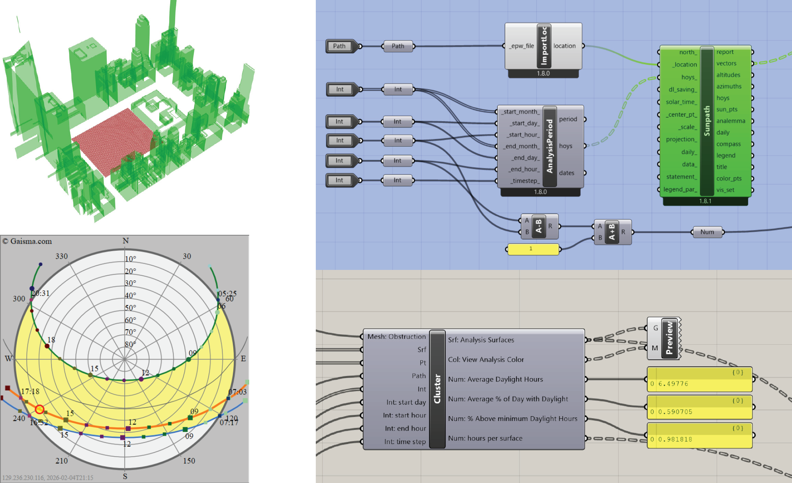
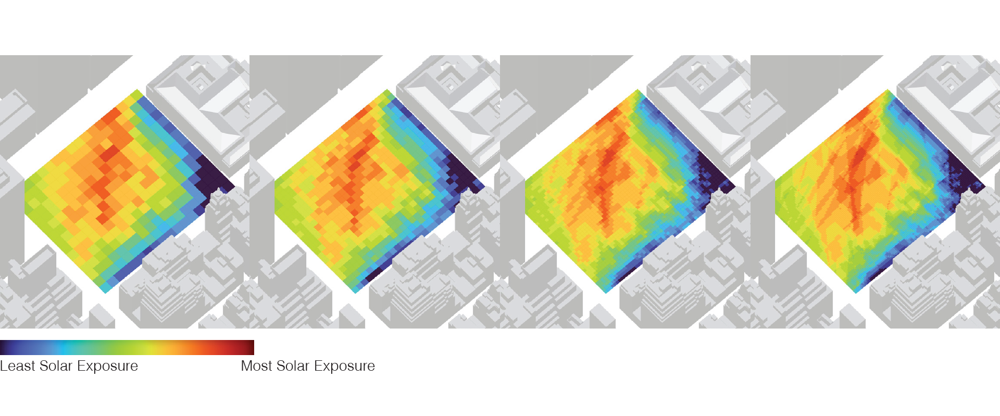
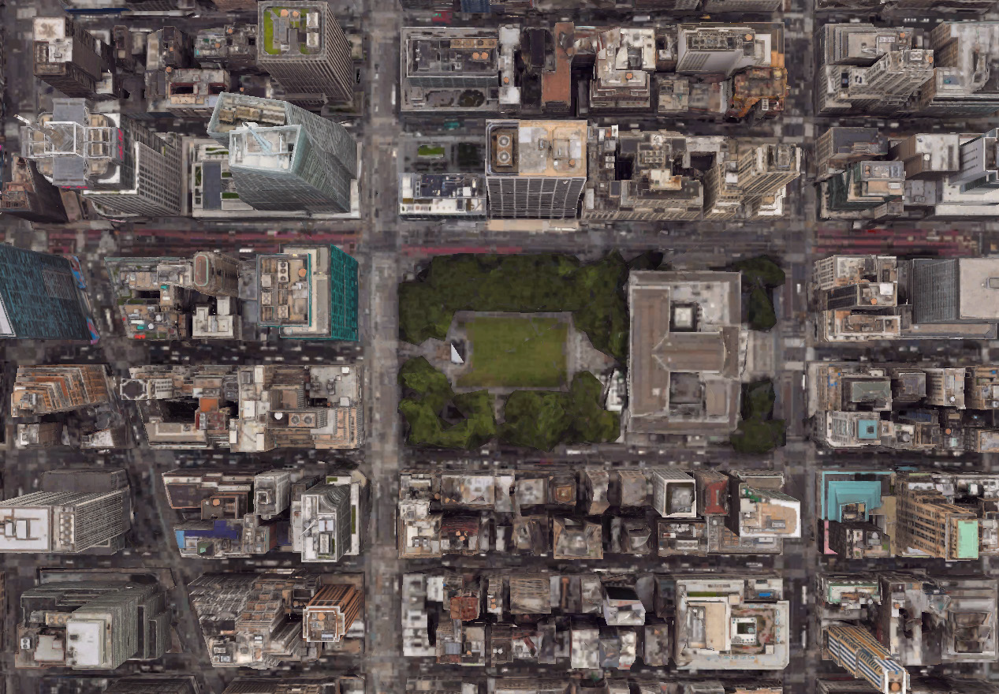
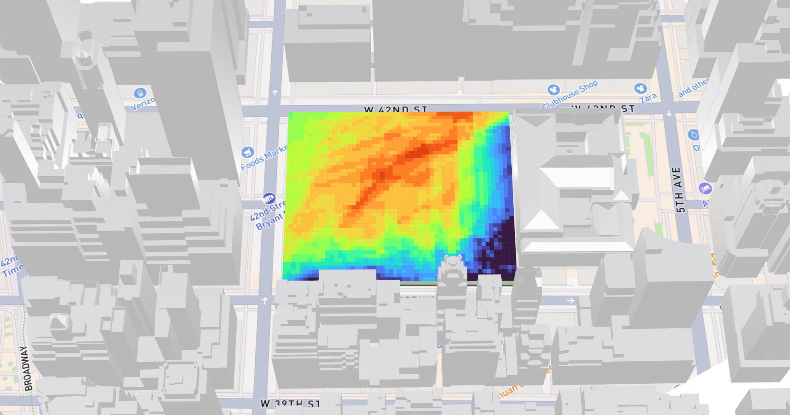

Bryant Park was selected as the testing site to evaluate how surrounding
urban form influences solar access at the block and surface level. For
each subdivided surface block within the park, total annual solar radiation
was calculated while treating adjacent buildings as fixed obstructions
that cast shadows throughout the day and across seasons. This setup
isolates the geometric impact of the built context, allowing sunlight
distribution to be understood primarily as a function of building height,
orientation, and street alignment rather than material or vegetation effects.

Bryant Park Solar Mapping
Summer 2025
Parametric Modeling
Urban Data Analysis
Tools:
Rhino3D + Grasshopper
Plugin:
- ClimateStudio
- DeCodingSpaces
- Ladybug
Input 1: Target Surface
Input 2: Obstruction Building Geometry
Input 3: NYC Sun Path Data
Surface-level solar radiation was simulated with surrounding buildings treated as obstructions, showing reduced sunlight on the south and west sides and greater exposure toward the central north. Real conditions vary due to trees and smaller structures not captured in the model.

Input 2: Obstruction Building Geometry
Input 3: NYC Sun Path Data
Surface-level solar radiation was simulated with surrounding buildings treated as obstructions, showing reduced sunlight on the south and west sides and greater exposure toward the central north. Real conditions vary due to trees and smaller structures not captured in the model.
Another trade-off point during the process if result precision vs computational
capacity. For every half the square size, the computational capacity
quadruples. The computational capacity and time of the last image is 64
times the first image (4 x 4 x 4).


Grasshopper Analysis result:
Average Daylight Hours: 6.4978
Average % of Day with Daylight: 59.0705%
% Above Minimum Daylight Hours: 98.1819%
Average Daylight Hours: 6.4978
Average % of Day with Daylight: 59.0705%
% Above Minimum Daylight Hours: 98.1819%